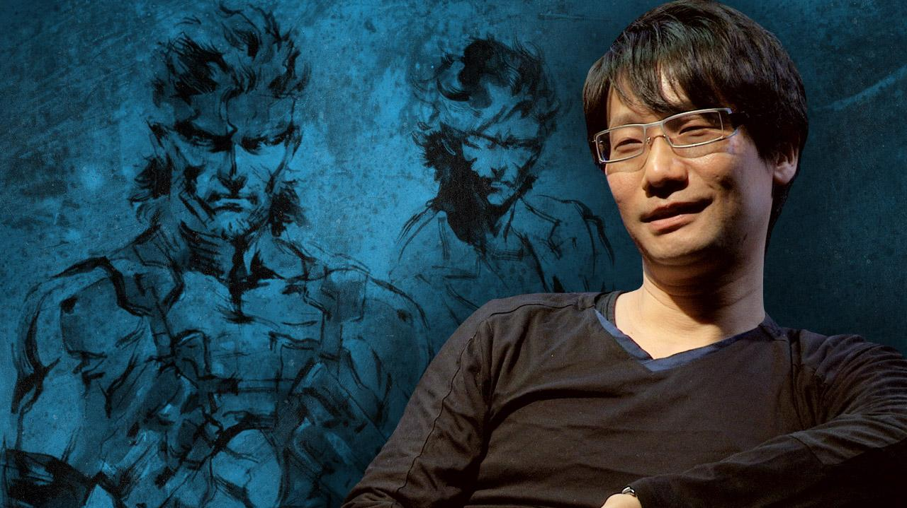

El 90% de lo que es considerado "imposible" es, de hecho, posible, el otro 10% será posible con el avance del tiempo y la tecnologia -Hideo Kojima

Hideo Kojima (小島秀夫, Kojima Hideo, nacido el 24 de agosto de 1963) es un popular diseñador de videojuegos japonés. Inicialmente era el vicepresidente de Konami Computer Entertainment Japan, y actualmente se encuentra a cargo del equipo desarrollador de videojuegos Kojima Productions, un nuevo equipo dedicado a la creación de videojuegos creativos dejando de lado las decisiones económicas y administrativas. Hideo Kojima es el creador y director de varios videojuegos exitosos incluyendo franquicias como Metal Gear, Snatcher y Policenauts. También ha producido juegos como Zone of the Enders y Boktai.


Carrera en el desarrollo de videojuegos
El primer juego en el que trabajó fue Penguin Adventure como asistente de director y el primer juego que desarrolló fue Lost Warld, un juego bélico de plataformas que tenía como protagonista a una luchadora enmascarada -en 1986-, sin embargo, este último fue cancelado por la compañía. El primer videojuego de Hideo Kojima en ver la luz fue Metal Gear, lanzado al mercado en 1987, para la PC MSX 2 con gran aceptación entre los críticos. El sistema MSX fue un gran éxito en Japón, Europa, Brasil y la Unión Soviética, pero se mantuvo en la oscuridad en EE. UU. y otros países. Varias personas (especialmente americanos) no jugaron al juego hasta que fue porteado a la consola NES, e incluso ahí sufrió varios cambios durante el proceso de conversión en el que Kojima no estuvo directamente involucrado. El juego presentaba a Solid Snake, un soldado que ha sido enviado al estado fortificado de "Outer Heaven" para detener el Metal Gear, un tanque caminante equipado con armas nucleares. El juego fue único por ser el primero con el modo de infiltración, donde el jugador es retado a no hacer contacto visual con el enemigo para evitar un confrontamiento directo (esto fue hecho debido a las limitaciones gráficas del sistema MSX ya que el hardware no podía manejar bien el desplazamiento de escena, ni mostrar muchos objetos moviéndose a la vez). También lanzó el aclamado Snatcher, en 1988, una aventura gráfica ambientada en la Guerra Fría y con estilo ciberpunk.  En 1990, Kojima lanzó Metal Gear 2: Solid Snake para MSX, solo en Japón. El juego fue aclamado en ese país por su sofisticada jugabilidad e intrigante historia, la cual introdujo significantes cambios a la serie Metal Gear, de los cuales muchos fueron llevados a "Metal Gear Solid". Fue de gran importancia las significativas caracterizaciones de los personajes del juego y el gran énfasis dado a la historia, que fue ampliada con el uso de escenas cortas. Otros cambios importantes fueron el mejoramiento de la IA de los soldados enemigos, la habilidad para arrastrarse y el uso del radar, entre otras mejoras. Pese al éxito en Japón, el juego nunca fue lanzado en Occidente hasta su inclusión en Metal Gear Solid 3: Subsistence en el 2006. En 1992 rehizo Snatcher para PC Engine bajo el título de Snatcher CD-ROMantic (el cual luego fue importado a Sega CD, el juego solo es oficial en su versión en inglés), y en 1994 diseñó Policenauts, un juego de aventura basado en una película de ciencia ficción ubicado en una colonia espacial (a veces visto como una "secuela espiritual" de Snatcher). Snatcher y Policenauts fueron grandes éxitos en Japón. También produjo una serie de juegos basado en la serie Tokimeki Memorial dating sim, que fueron hechos con el mismo motor usado en Policenauts. Con el lanzamiento de Metal Gear Solid en 1998 para PlayStation, Kojima se convirtió en una celebridad internacional entre los jugadores. Metal Gear Solid fue el primero en la serie Metal Gear en usar gráficos 3D y voces de actores, lo cual daba una experiencia más cinematográfica al juego. Metal Gear Solid fue muy bien recibido por su jugabilidad bien diseñada, la historia y sus personajes, los cuales introducían temas de proliferación nuclear e ingeniería genética.